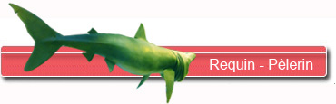
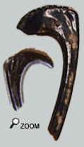
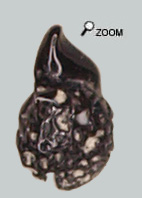
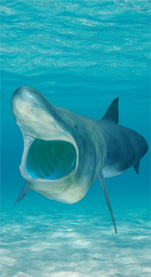

La discrétion d'un monstre...
 
Dans les faluns d'Anjou-Touraine, la famille des requins-pèlerins n’a été signalée que tardivement grâce à un fanoncule isolé, de la collection Hautefort, présenté ci-contre. Depuis j'en ai trouvé un autre en mauvais état.
A ma connaissance, les dents n’avaient pas non plus été déclarées. Cet animal gigantesque se fait donc très discret.
Dans le registre fossile et selon l’état actuel de nos connaissances, 2 genres de requins-pèlerins ont été définis au miocène:
-Keasius : genre éteint dont les dents sont lisses et assez larges avec une espèce connue depuis longtemps "parvus". Keasius montre une structure dentaire primitive très lamnoïde.
-Cetorhinus dont il existe encore un représentant vivant C. Maximus. De manière synthétique, les dents possèdent des caractères très dérivés et sont plutôt élancées et ornées de rugosités sur la face linguale.
 La dent trouvée est très ornementée et donc naturellement c’est vers le genre Cetorhinus que nous tenterons de la rapprocher. Les critères distinctifs de cette dent sont :
Une face labiale très torturée avec des «coulures» d’émail sur la racine. De telles coulures ne sont pas connues chez les espèces fossiles étudiées mais elles rappellent les ravins d’émail observés sur la base des dents de C. Maximus.
Une inclinaison latérale de l’apex de la dent
Un tranchant sur une des arêtes de la couronne
Une racine très caverneuse avec un foramen central sur la face linguale
Enfin sa petite taille (environ 2 mm) fait penser à une dent juvénile. En effet il a été prouvé l’existence d’un phénomène ontologique pour expliquer des morphologies dentaires disparates. A cela on peut ajouter la position sur la mâchoire qui introduit également une variabilité sur les dents. Les dents les plus latérales sont également les plus petites…
Au fil de l'eau

Cetorhinus maximus est caractérisé par :
-de grandes fentes branchiales qui encerclent presque la tête,
-de nombreux et longs fanoncules filamenteux d’origine dermique tapissant les côtés antérieur et postérieur de chaque arc branchial,
-un museau fortement proéminent.
Dans la bouche les mâchoires portent de très nombreuses petites dents organisées en plusieurs rangées. Ces dents sont des reliquats d’évolution et il serait douteux qu’elles aient une réelle fonctionnalité.
Le requin-pèlerin vit sur des zones côtières pélagiques. On le rencontre dans des mers aux températures variées circumpolaires jusque dans les eaux tempérées chaudes. Pourtant au contraire du requin-baleine qui a une écologie assez comparable, le requin-pèlerin préfère quand même les eaux plus froides.
|